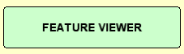
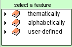
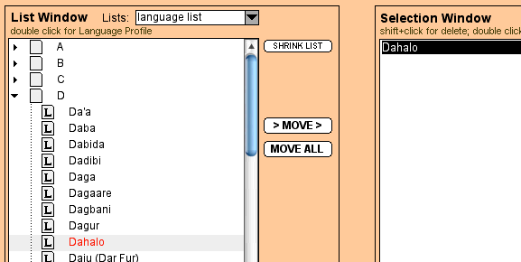

World Atlas of Language Structures
the Interactive Reference Tool
the Manual
Content
0.1 Installing the WALS program
1.1. Displaying the standard WALS maps on your screen
1.2. More information about languages on the map
1.3. Zooming and dragging the map
1.5. Customizing the map legend
1.6. Printing and saving a map
2.2. Changing the appearance of symbols
2.3. Excluding predefined values
2.4. Merging predefined values
2.5. Displaying the languages having a given value
2.6. Restricting the set of languages shown on a feature map ("the filter")
2.7. Saving and accessing modified features
3.2. Showing individual languages on a map
3.3. Showing language groups on a map
3.4. Displaying language groups by families and genera
3.7. Copying language lists for use in other applications
4. Combining standard WALS features
4.2. Modifying a combined feature
4.3. Reducing the values of the features that are to be combined
4.4. Saving a combined feature
5. Finding language sets by multiple query conditions ("Database Query")
5.1. Defining a language set: Introduction
5.3. Positive and negative query conditions
5.4. The point-based geographical query properties
(i) the <NUMBER> closest languages of <LAT, LONG>
(ii) all languages within a circle of <LAT, LONG, RADIUS>
5.5. Editing the definition of language sets
5.6. An example of multiple language sets in a single query (= on a single map)
6. Importing map data to display your own maps
the Feature Viewer and the Composer
8. Hints, FAQs, and known bugs
May I use the maps generated by the program in my presentations or publications?
The WALS program beeps.
The display of more than 1000 languages on a map is slow.
After running the WALS program in the background for a long time, it takes some time to refresh the program.
The printout of the map as vector graphics is odd.
How can I save the map as vector graphics?
My printout dimension is not the same as within the program.
After maximizing the WALS program, the map size is the still the same.
The scrollbar of the hierachical lists has a different shape and colour.
What does the operator '<>' mean within the Database Query mode of the Composer?
What do the terms bitmap and vector graphics mean?
Why does a genus appear in the List Window twice?
What does the family "Other" mean?
Where can I find more information or updates?
Whom should I send a message about bugs, errors, or corrections to?
A dot on the map is situated "in the ocean".
Why is map 141 not included in the Interactive Reference Tool?
If I click on "Modify" within the Two-Feature Combination mode of the Composer, my earlier modifications are lost.
After a click on a hyperlink the program does not work properly.
The menubar disappears suddenly.
0. Getting started
0.1 Installing the WALS program
The Interactive Reference Tool of the World Atlas of Language Structures (WALS) (also called simply "the WALS program") is a standalone application with a built-in SQL server and an SVG map server.
The only third-party applications you need are:
- an installed PDF viewer, like Acrobat Reader or Preview, to see the feature descriptions;
- a standard web browser to see the manual.
The structure within the WALS folder:
|
root: |
the necessary program files with the executable application file |
|
desc: |
the feature descriptions saved as PDF and named by the map number |
|
manual: |
the necessary files for the help function |
Macintosh:
To install the WALS program you only have to copy the whole WALSos... folder onto your hard disk. The program needs about 105 MB free space.
(WALSosx – for the operating system Mac OSX 10.2 and up;
WALSos9 – for the operating system Mac OS 9.2 only)
Windows:
To install the WALS program you only have to copy the whole WALSwin folder onto your hard disk. The program needs about 105 MB free space.
To start the WALS program, execute the file  WALS (for Macintosh) or WALS.exe (for Windows).
WALS (for Macintosh) or WALS.exe (for Windows).
0.2 Some important remarks
- You cannot start the program from the CD-ROM. It will not run.
- The built-in SQL server only runs on 1-byte operating systems, i.e. the WALS program will not run on systems whose default language is Japanese, Chinese, or Korean. You have to change the default language (e.g. to English).
- You cannot run the program for Mac OS 9.2 within the classic environment of Mac OSX.
- The WALS program needs a lot of your system resources. If you run the program on a slow computer (G3 400 MHz or PIII 500 MHz), allow enough time for each action.
More remarks can be found under 8. Hints, FAQs, and known bugs
0.3 First steps
The Interactive Reference Tool of the World Atlas of Language Structures (WALS) consists of three main parts:
- the Feature Viewer (see 1.-2. below), for displaying and modifying WALS maps
- the Language Viewer (see 3.), for defining sets of languages and displaying them
- the Composer (see 4.-5.), for combining several WALS features and finding language sets by multiple query conditions
On the Start Screen, click on one of the three buttons to go to the respective part of the program. At every point in the program, you can switch between the Feature Viewer, the Language Viewer and the Composer by clicking on one of the smaller buttons in the upper left corner. (Alternatively, you can choose Window from the menu, or select the three parts using the keyboard, as indicated in the menu).
1. Viewing WALS maps
You can display all the maps of the printed atlas ("the standard WALS maps") on your screen. This is done with the part of the program called Feature Viewer.
1.1. Displaying the standard WALS maps on your screen
Within the Feature Viewer, you can select a feature whose map you want to display in three ways:
- Thematically, i.e. by thematic area such as Phonology, Nominal Categories, Simple Clauses. (This order of features is the same as the order in the printed atlas.)
- Alphabetically, by name of the feature.
- By typing letters or numbers into the search field (you can search by any title or value word, author name, or chapter number).
To display a standard WALS map, do the following:
1. On the Start Screen, click on the button "Feature Viewer" (or choose Window > The Feature Viewer).

2. Go to one of the folders "thematically" or "alphabetically", open it by clicking, and choose a feature from one of the subfolders (again by clicking).

(To close all folders, click on the button "Shrink list".)
The folder "user-defined" does not contain standard WALS features. See *2.7. and *4.4. for explanation of its contents.
3. The Feature Profile for this feature will now be displayed in the shaded area of the Feature Viewer. (This contains the list of all the values and symbols, as well as other information.)
4. Click on the button "Show map" in the upper right corner.
5. The program will display the standard WALS map for this feature. (To go back to the Feature Profile, click on the button "Back" in the upper right corner.)
You can get more information about any of the languages, zoom and drag the map, and customize it in various ways.
1.2. More information about languages on the map
You can view the name of every language by pointing to the language symbol on the map with the mouse.
Clicking on a symbol opens a window with further information about the language (the Language Profile). This gives you the data source(s) for the particular language, a list of all bibliographical references for the language that were used by WALS authors, and (for some features) an example of the phenomenon. It also includes a list of all WALS features/maps on which this language appears ("available features"). At the end, it shows information about genealogical affiliation, geography, and alternative names (see 3.8).
(The feature "Reciprocal Constructions" does not include examples, so no example can be seen for this particular language-feature combination.)
You can display the names of all the languages on the current map by choosing Map > Show Language Names (or shortcut "L"). However, unless there are very few symbols shown on the current map, many names will appear overlaid on top of each other. You can also show the three-letter codes of the printed atlas by choosing Map > Show WALS Codes (or shortcut "D").
The geographical coordinates (longitude and latitude) of a point on the map are displayed just above the map when you move the mouse over that point; the coordinates give the current location of the mouse. You can use this method to find a location on the map if you know its coordinates, or (inversely) to determine the coordinates of a given language. (The coordinates of each language are also given as part of the Language Profile.)
1.3. Zooming and dragging the map
Zoom in by clicking on  , zoom
out by clicking . (Alternatively, choose Map > Zoom
in/Zoom out, shortcuts "+",
"-".)
, zoom
out by clicking . (Alternatively, choose Map > Zoom
in/Zoom out, shortcuts "+",
"-".)
You can drag a zoomed-in partial map by holding the mouse button down and moving the mouse in the desired direction.
You can select a specific zoom area by
first clicking on the boxed-in magnifying glass (or,
equivalently, by holding down the shift key). Coordinate-lines will appear on
the map, which you can move to any location you wish. Pick a point on the map;
click and hold the mouse button down, then drag southeast or northwest. A
rectangle will appear as the selected zoom area. Release the mouse button when
the desired rectangle has been selected; this is your zoom area. To
increase/decrease the zoom scale, simply click on or  .
.
At any time you can go back to the full map by clicking on (alternatively, choose Map > Full Map, shortcut "V").
The symbol  (alternatively, Map
> Zoom Automatically, shortcut "Z")
will automatically find the zoom area that best displays all the languages that
are present on the map. (This is largely identical to the full map for standard
WALS maps, but when only a geographically
restricted subset of languages are chosen, this feature can be quite useful.)
(alternatively, Map
> Zoom Automatically, shortcut "Z")
will automatically find the zoom area that best displays all the languages that
are present on the map. (This is largely identical to the full map for standard
WALS maps, but when only a geographically
restricted subset of languages are chosen, this feature can be quite useful.)
You can also select a zoom area around a single central point by right-clicking (or ctrl-clicking if your mouse has only a single button) on that point.
You can go to the last zoom area by clicking on (alternatively, choose Map > Last Zoom Area, shortcut "A").
If there are certain zoom areas that you will want to use again and again, you can define your own zoom areas. Select a zoom area using the magnifying glasses, then go to the main menu and choose Zoom Areas > Add the current zoom area. Then give the current zoom area a name. Under this name, this zoom area will now appear in the pull-down list "zoom areas". Three zoom areas are pre-given in the list as examples ("Australia", "Caucasus", "Indonesia"). If you want to delete one of the zoom areas, select the area on the “zoom areas” pull-down list, then go to the main menu and click on Zoom Areas > Delete current Zoom Area.
1.4. Customizing the map
You can freely add or remove various geographical features to/from the map display:
- the grid of longitude/latitude coordinates (Map > Show Grid, shortcut "G")
- country names (Map > Show Country Names, shortcut "N")
- some major cities (Map > Show Cities, shortcut "C")
- some major rivers (Map > Show Rivers, shortcut "R")
- topological information, replacing the uniform light green/light blue background colour (Map > Show Topology, shortcut "T")
Country boundaries and the Ocean colour are part of the standard display, but they can be removed:
- remove country boundaries (Map > Show Boundaries, shortcut "B")
- remove Ocean colour (Map > Show Ocean, shortcut "O")
You can display the language symbols in five different sizes: click one of the five boxes below "adjust symbol size".
You can also display the map with lower-quality graphics in order to make the program faster. Choose Map > High Map Quality to turn this feature off and on.
1.5. Customizing the map legend
The map legend consists of the value list, the map title, and the author name.
The value list can be moved around on the map by clicking and dragging it. This allows you to move it to a position where it minimally interferes with the map symbols.
The value list can also be removed entirely. Click the button Map Legend to remove it or to bring it back.
The map title, the author name, and the number of languages shown can also be moved around on the map by clicking and dragging. Standardly the title, the author name(s), and the number of languages appear above the map (in the upper left corner), but you may want to include these things when printing or saving maps, so it may be good to move them onto the map.
1.6. Printing and saving a map
A map can be printed in vector graphics format or in bitmap format. Choose Map > Print the Map only as Vector Graphics (shortcut "P") or Print the Map only as Bitmap (shortcut "I"). This will only print the map, without the legend. (See more)
A map can be saved in PICT/BMP, JPEG, or PNG format. Choose Map > Save Map as PICT or BMP/as JPEG/as PNG. All data which are placed within the map boundaries, e.g. map legend, author, title, number of languages, are included.
It is also possible to save a map as a plain text file, containing for each language on the map: its WALS code, its symbol shape, and the colour of the symbol. Choose Map > Save Map as Plain Text File (see 6. Importing map data).
You can copy the current map onto the clipboard by clicking "Copy map" in the upper right corner of the map window. To copy the legend onto the Clipboard, choose Map > Copy Legend to Clipboard.
1.7. Reinit the map
To reinit the map, choose Map > Reinit Map. This function is useful if the map looks odd, i.e. it could happen that some dots are bigger than others. It refreshes the map with the given data.
2. Modifying WALS features
You can modify the WALS features and the corresponding maps in various ways. This is done within the Feature Profile.
2.1. The Feature Profile
The main component of the Feature Profile is the value list (with the corresponding map symbols preceding it), which is also shown on each printed map as the legend.
Above the value list, just below the author's name, you see (in red) the number of languages included in the language sample for the feature you are looking at. (The sample size and sample composition differs significantly across the standard WALS maps.)
You can also get a full description of the feature values (explaining in detail how they are defined) by clicking on the button "Description" in the upper right corner of the Feature Profile.
The description is a PDF file that is opened with your browser when you click on the button. The text is identical to the text that appears in the printed atlas.
In the Feature Profile, you can change the appearance (shape and colour) of symbols, merge feature values, and get more information about the languages included in each value.
In the value list of the Feature Profile, each value is followed by three numbers. The first is the number of languages that have been classified as having the value, the second is the number of genera, and the third is the number of families. (Since languages belonging to the same family and especially to the same genus often show the same value of a feature simply due to their genealogical relatedness, linguists are often more interested in counting genera or families than in counting languages.)
By passing the mouse over the values, you will see (in a yellow window) the full feature-value names that appear in the text of the printed atlas (where these differ from the shorter value names of the map legend). Sometimes these longer names provide additional information that is useful for understanding what the value names mean.
2.2. Changing the appearance of symbols
The predefined colours and shapes of the symbols are the same as those of the printed atlas.
You may change the colour and shape of each symbol. In the Feature Profile, simply click on a symbol and examine the selection window that opens.
Select a new colour and/or shape by clicking on the relevant buttons, and then click "Set". Alternatively, you can specify a colour by entering a hex value (for advanced users; see 6. Importing map data).
You can return to the predefined colours and shapes by clicking on the button "Restore default symbols" in the lower left corner of the Feature Viewer.
You can save the customized symbols by clicking on the button "Save customized symbols" in the lower left corner. Your customized symbols will now be used until you restore the default symbols.
2.3. Excluding predefined values
If some of the predefined values on the map are irrelevant to your concerns, you can exclude them, i.e. remove them from the list of values that are considered.
Click on the field in the column "include" to exclude (or reinclude) a value.
Excluded values will not be displayed on the map. The map now only shows those languages that have one of the values that are still included.
You can save the version of the feature that excludes some values by clicking on the button "Save modified values" in the lower left corner. Saved features are listed in the folder "user-defined" (sub-folder "modified features") in the upper left corner of the Feature Viewer.
2.4. Merging predefined values
You can merge several predefined values and thereby reduce the number of values shown on the map. This can often be useful if you want to focus on some major distinction, or if you want to contrast a single value with all others.
Merging is done by using the merge fields to the right of the value names. There are as many columns and rows of merge fields as there are values.
To merge two values A and B (where A and B stand for value numbers), click on the merge field of column B and row A. The highlighted square for A or B will move to the new location (the location you have clicked on), leaving the originally highlighted square empty. For example, the following is the result of merging values 1 and 2 and values 3 and 4:
To undo the merge, click on the now-empty square; the highlighted box will move back to its original location, and the merge will be canceled.
The merging of the two values is shown by deemphasizing the value name of the second value, and by automatically assigning a new value name to the first value. The first value now has the form "Value name one OR Value name two", and the numbers following it show the added numbers of both values.
These resulting compound names are often long and cumbersome. They can be renamed by right-clicking (or ctrl-clicking if your mouse has only one button) on the compound name in the Feature Profile and entering the new name into the window that opens.
It is also possible to merge more than two values. Simply repeat the procedure described above.
You can save the new feature with merged values by clicking on the button "Save modified values" in the lower left corner. Saved features are listed in the folder "user-defined" (sub-folder "modified features") in the upper left corner of the Feature Viewer.
2.5. Displaying the languages having a given value
Below the value list, you find a view list that gives more information about the languages having the various values.
Click on a value in the value list to see the corresponding list of languages, families, genera, or macro-areas. The heading of the view list shows the number of the feature value that is currently shown. You may copy this list onto the clipboard by clicking on the button "Copy list".
The pull-down menu list to the left of the view list allows you to choose between "languages", "families", "genera", and "macro-areas".
The default choice is "languages". If "languages" is selected, you will see a simple alphabetical list of all languages that have the current feature value.
If "families", "genera" or "macro-areas" is selected, you will see a list of families, genera or macro-areas together with three types of numerical information.
For example, when "families" is selected, you may see a list of families, beginning with something like "Afro-Asiatic [5-7-141]". This means that there are 5 Afro-Asiatic languages with the current value, that there are a total of 7 Afro-Asiatic languages in the sample for this feature, and that there are 141 Afro-Asiatic languages in the entire set of WALS languages.
2.6. Restricting the set of languages shown on a feature map ("the filter")
WALS maps standardly show all the languages for which the database has values for the relevant feature. However, it is sometimes useful to show only a subset of the languages. For example, you may be interested only in the languages of Mexico and Guatemala, or only in the Austronesian languages.
The set of languages shown on a feature map can be restricted by applying a filter. Filters are defined in the Language Viewer; see 3.6. Defining filters for how this is done. Go to the Language Viewer and select an appropriate filter from the pull-down menu in the lower right corner. If a filter is selected, the buttons "Use filter" and "Remove filter" will appear in the lower right corner of the Feature Profile.
Click on "Use filter" to restrict the set of languages to those that are in the filter. For instance, if your filter is "Eurasia" (containing the 368 languages from the macro-area Eurasia), the value list will show only those languages from the sample that are in Eurasia, and after clicking "Show map", you will only see languages from Eurasia.
2.7. Saving and accessing modified features
If you want to reuse a modified feature (i.e. a feature with excluded and/or merged values), you can save it by clicking on "Save modified feature". This button only appears after modifications have been made.
A saved modified feature is listed in the subfolder "modified features" of the folder "user-defined". The kinds of modifications that were made can now be seen in the name of the modified feature.
For example, if you modify the feature "Definite Articles" by excluding value 2 and merging values 4 and 5, the name appears as follows:
When you access the modified feature from its folder, you will no longer be able to apply further merging of values. (You will have to do this in the standard feature.) However, you can continue excluding values.
To delete a modified feature, select it from its folder and click on the button "Delete modified feature", which only appears in saved modified features. To delete all modified features, choose Database > Delete all modified Features.
Saved modified features can be exported and (re-)imported. Go to Database > Export all user-defined Features to export your features to a file, and to Database > Import user-defined Features to import features. This could be useful if you want to reinstall the program from the CD-ROM, but if you want to keep your previously defined features.
3. Viewing WALS languages
You can use the Interactive Reference Tool to create maps showing any subset of WALS languages. This will be useful, for instance, if you want to display the location of languages belonging to a particular family or genus, or if you want to show the location of languages in a particular country.
The part of the program that allows you to do this is called the Language Viewer.
3.1. The Language Viewer
The Language Viewer contains a List Window and a Selection Window. Languages and language groups displayed in the List Window must be moved to the Selection Window before they can be shown on a map.
Within the List Window, all WALS languages are given in folders, sorted by language name, by family, by genus, by country, or by macro-area. The sorting mode is chosen from the pull-down menu just above the List Window.
For clarity, the in the List Window some names are preceded by icons:
language, family, subfamily, genus.
The List Window also shows the search result when the search field below it is used.
By double-clicking the name of a language (either in the List Window or in the Selection Window), you can open the Language Profile and obtain detailed information about a language.
3.2. Showing individual languages on a map
Individual languages can be found by their language name, their genealogical affiliation, their country, or their macro-area. (They can also be found using the search field below the List Window. See 3.5. Searching for languages.)
Let us consider an example. Suppose you want to show the location of Dahalo, a Southern Cushitic language of Kenya.
You can find Dahalo in the sub-folder "D" in the "language list" sorting mode of the List Window, where languages are listed alphabetically and arranged into folders by their first letter. (To close all folders, click on the button "Shrink list".)
Drag the name "Dahalo" into the Selection Window (or click on it slowly, i.e. holding down the mouse button for one second; this has the same effect). You may also select a language by clicking on it (selected languages and folders appear in red), and then click on "Move". This has the same effect as dragging a language name or clicking on it slowly.

To remove an entry from the Selection Window, hold the shift key down and click on the language name.
Alternatively, you can use the "family list" mode of the List Window. Open the folder of the family, Afro-Asiatic, and within it, open the folder of the sub-family, Cushitic. This consists of four sub-folders for the four genera of Cushitic. You will find Dahalo in the genus "Southern Cushitic".
(Each genus folder is followed by a number indicating how many WALS languages there are in the genus; the (sub)family folders additionally give the number of genera they contain.)
Another possibility is to use the "genus list" mode (e.g. if you know that Dahalo is Southern Cushitic, but you're not sure of the family). Or you can use the "country list" mode. If you open the folder for "Kenya", you see that its 16 WALS languages are found in three different families (and one in "other"); go to the folder "Afro-Asiatic" and its sub-folder "Southern Cushitic" to find Dahalo.
The "family list" mode and the "country list" mode occur in two variants: families and countries can be sorted either alphabetically or geographically. For families, geographical arrangement means from east to west, i.e. from southern Africa to southern South America. (This is also the order in which families are listed in the Genealogical Language List in the printed atlas.) For countries, geographical arrangement means by macro-area, and then alphabetically within each macro-area sub-folder.
Once Dahalo is displayed in the Selection Window, you can click "show map" to view a map with Dahalo on it. The program automatically assigns an arbitrary colour to the symbol for the language.
Language maps can be customized and manipulated in the same ways as feature maps. See 1.2. More information about languages on the map, 1.3. Zooming and dragging the map, 1.4. Customizing the map.
If you want to create a new map, you may delete all languages from the Selection Window by clicking "Clear".
3.3. Showing language groups on a map
You may also show language groups of various types on a map. Language groups can be moved from the List Window into the Selection Window by dragging a language group folder into the Selection Window. (Alternatively, you can select one or more folders by clicking on them and then click on "Move".)
The Selection Window then shows an alphabetical list of the languages; the line below it indicates the number of languages that are currently in the Selection Window.
For example, if you want to display all Afro-Asiatic languages on a map, select the "family list" mode of the List Window from the pull-down menu, and drag the folder "Afro-Asiatic" into the Selection Window. The Selection Window then shows all the 141 Afro-Asiatic WALS languages in alphabetical order ("Aari, Alagwa, Amharic, ..."). Click on "Show map" to see a map of all 141 Afro-Asiatic languages.
Or if you want to show all WALS languages spoken in Burkina Faso, select the "country list" mode, and drag "Burkina Faso" into the Selection Window. This then shows all 23 WALS languages spoken in Burkina Faso. (Not all of the languages appear within the boundaries of Burkina Faso on the map, because some languages are also spoken in adjacent countries, and the dot for the language happens to be located in another country.)
You can also create and display compound groups on a map by dragging several folders into the Selection Window. Or you can add individual languages to groups that are already in the Selection Window. The compound groups may be heterogeneous; for example, you may show all languages that belong to a certain family plus all languages that are spoken in a particular country. (Languages that belong to two such groups simultaneously are of course displayed only once.)
For example, you may want to show all 47 Bodic languages (a genus of the Sino-Tibetan family), plus Burushaski (an isolate spoken in the area), plus all the 31 languages of Nepal. Since 25 of these are Bodic languages, the Selection Window will not show 47 + 1 + 31 (=79) languages, but only (79-25=) 54 languages.
You may remove individual languages from the Selection Window by shift-clicking on them.
You may move all languages from the List Window into the Selection Window by clicking "Move all". (This makes sense mostly after using the search function, see 3.5. Otherwise all 2560 WALS languages are moved into the Selection Window.)
3.4. Displaying language groups by families and genera
Language maps can provide further information about families or genera. If you want to get this information, select "genera" or "families" (rather than the default "none") from the pull-down menu in the upper right-hand corner of the Language Viewer.
If "genera" or "families" is chosen, the language map will assign different colours to languages of different genera or families.
For example, a map of all languages of Cameroon coloured by genera looks as follows:
A legend is created automatically that explains which colour shows which genus or family. Like the value list of the feature maps, this legend can be dragged anywhere on the map, and it can be turned off and on with the button "Map legend".
(When a language group contains a large number of families or genera, the map legend will not fit on the map. There is unfortunately nothing that can be done about this.)
3.5. Searching for languages
You can find languages or language groups by typing a search word (or several search words) into the search field below the List Window.
This search field allows you to look for languages not only based on language names, families, genera, and countries, but also based on the WALS code, the Ethnologue codes, or bibliographical references. Select the type of information that you want to search from the pull-up list below the search field, then type your search word(s), and click on "Search" (or equivalently hit the "enter" key).
The search results are displayed in the List Window, from which language names or folders can be dragged into the Selection Window. (To move all languages of the List Window into the Selection Window, click "Move all".) Results are standardly displayed "while typing", i.e. with each letter that you type into the search field, the results are narrowed down further. Standardly only search results whose initial letters match are shown.
For example, if you want to know what the WALS code vaf stands for, select "WALS code" from the menu and type "vaf". By typing "va" you get all languages whose WALS code begins with the string "va". By typing "sw" (as "country") you get all three countries beginning with the letters "sw" in their name.
By typing "Sapir" in the category "references", you get a list of all references by Edward Sapir (plus a few others). By typing "Leningrad" in the category "references", you get all references that have "Leningrad" in their name. The search results appear as a list of folders containing the languages that are treated in the work.
By clicking and unselecting "while typing", you deactivate this feature. Search results are then shown only after clicking "Search" (or hitting the "enter" key).
By clicking and unselecting "word initials only", you can search for arbitrary strings (i.e. not necessarily initial parts of words).
When searching for language names, you also get languages whose alternative names contain the search string. For example, searching for "Nootka" as "language" gives you Kyuquot, Nitinaht, and Nuuchanulth, because the first two are also regarded dialects of "Nootka", and Nuuchahnulth is also called "Nootka" (see §3.8. on alternative language names).
3.6. Defining filters
A filter allows you to define and save a set of languages that you are particularly interested in. In particular, a filter allows you to restrict the set of languages that are shown on a feature map (2.6. Restricting the set of languages shown on a feature map).
To define a filter, simply move the desired languages into the Selection Window of the Language Viewer (as described in 3.2 and 3.3), and then click on the button "Set" in the lower right corner. Then a window opens and you are asked to "Enter a name for the filter" which describes the set of languages to be applied as filter. Your filter is then added to the list of filters in the pull-down menu ("Current filter:").
You may delete an existing filter by first selecting it from the pull-down menu and then clicking on "Delete". If you want to be reminded which languages are in a particular filter, you can select it from the filter list and then click on "Show". This will clear the Selection Window and then display all the languages of this filter in the Selection Window.
A filter can also be defined in the Composer (Database Query, see 5.1).
3.7. Copying language lists for use in other applications
If you want to use a language list generated by the Language Viewer in another application, you can copy the list that is currently in the Selection Window onto the clipboard by clicking on "Copy ".
You may also import a list from another application by copying it onto the clipboard in that application and pasting it into the Selection Window by clicking on "Paste". The list must consist only of WALS language names, or else the Selection Window will not recognize it.
3.8. The Language Profile
The Language Profile is a window that provides further information about a given WALS language.
The Language Profile is opened by clicking on a language symbol on a map, or by double-clicking on a language name in the Language Viewer.
It contains the following types of information:
-- the WALS code (the three-letter abbreviation that appears on the symbols in the printed atlas)
-- genealogical information (the family, the genus, and sometimes the subfamily; see the "Genealogical Language List" in the printed atlas for more information on the principles that were used for genealogical classification)
-- the Ethnologue codes (Ethnologue's unique three-letter identifiers) and language names. Both the old code and name of Ethnologue's 14th edition (ed. by Barbara F. Grimes, 2 vols., Dallas: SIL International, 2000), and the new code and name of Ethnologue's 15th edition (ed. by Raymond G. Gordon, Jr., Dallas: SIL International, 2005) are given. If your browser is connected to the Internet, clicking on the Ethnologue codes will send you to the relevant page of ethnologue.com, so you have immediate access to everything that Ethnologue says about the language. (Note that the old codes appear in upper-case letters, while the new codes appear in lower-case letters. This corresponds to Ethnologue's practice.)
-- further alternative names: "Routledge name" refers to the name used in "Atlas of the World's Languages", ed. by Christopher Mosely and R.E. Asher, London: Routledge, 1994; and "Ruhlen name" refers to the name used in Merritt Ruhlen's "A Guide to the World's Languages, vol. 1: Classification", Stanford: Stanford University Press, 1987.
-- geographical information: the macro-area, the coordinates of the location, the country or countries where the language is primarily spoken, and, for larger countries, the region within the country
-- a list of all references that were used by the WALS authors for the maps that contain the language
-- a list of all features that contain information on the language, together with the feature value for each feature. By clicking on the feature name, you get to the feature profile of the feature. Those features that contain examples have an "[ex.]" behind their feature. By clicking on "[ex.]", you open a window that displays the example.
4. Combining standard WALS features
The Interactive Reference Tool allows the user to observe the interaction of several different features. This is done by composing new features from standard WALS features. The part of the program that is devoted to this is called the Composer.
Within the composer, there are two modes: Two-Feature Combination, and Database Query.
In the Two-Feature Combination mode, two standard WALS features are combined to create a combined feature.
For example, you may want to know how gender interacts with numeral classifiers. The feature "Sex-based and Non-sex-based Gender Systems" (map 31) distinguishes three different values, and the feature "Numeral Classifiers" (map 55) also distinguishes three different values. When we combine these two features, we get nine logically possible combined language types.
What we are interested in is how actual languages are distributed over the logically possible combined values.
4.1. Combining two features
On the Start Screen (or within the Language Viewer or the Feature Viewer), click the blue button "Composer", and then "Two-Feature Combination ". (In the Database Query mode of the Composer, click on "Go to Combination".)
Now select the two features to be combined. This is done in the same way as when selecting standard WALS features in the Feature Viewer (see 1.1. Displaying the standard WALS maps on your screen), i.e. thematically, alphabetically, or by typing a word or number into the search field. Modified features may also be selected.
After the first feature is selected, its name will appear under "Feature 1" in the dark blue Composer window, and you will also see the number of values that are distinguished by the feature and the number of languages for which the database has information on that feature.
Then select the second feature. After selecting it, again you see its name, the number of values and the number of languages.
But now you will also see a list of combined values with combined value names. The red line just above the combined value list tells you how many shared languages there are (i.e. languages for which both features have information), how many combined values there are (i.e. the number of values of feature 1 multiplied by the number of values of feature 2), and how many of these values are attested.
The value names of the combined values are composed of the name of the first value (from the first feature), the word "AND", and the name of the second value (from the second feature).
For example, if the combined features are "Sex-based and Non-sex-based Gender Systems" (map 31, 256 languages) and "Numeral Classifiers" (map 55, 400 languages), the intersection of shared languages is 133 languages. The combined feature gives information just about these shared languages, and the map will only show these shared languages. Both of these features are three-valued, so we get nine logically possible combined values. Of these, eight are actually attested. None of the 133 shared languages exemplifies the ninth type.
Each value name is preceded by information about how many languages, in how many genera, and in how many families show the value. (In the Feature Viewer, this information follows the value names. Here it precedes them because the numbers are even more important here and because the combined value names are often very long and do not fit into the line.)
You can now click on the button "Show map" to display a map showing the shared languages. This map works just like the maps of the standard WALS features (see 1. Viewing WALS maps).
If the combined feature has more than 9 values, they cannot all be displayed in the value list at the same time. Only the first 9 will be displayed initially, and below the symbol column, two buttons appear. To see the other values, click on the "Next" button, which will show the next 9 values; click on the "Prev" button to see the previous 9 values again.
4.2. Modifying a combined feature
You can modify a combined feature in some of the same ways as you can modify a standard WALS feature.
– Click on the symbols to change their colour and/or shape (see 2.2).
– Click on the boxes to the left of the value names to exclude values from the map (see 2.3)
– Right-click on the value names to rename the combined values (see 2.4).
However, you cannot merge combined values in the same way as standard values can be merged (see 2.4). How the number of combined values is reduced is described in *4.3.
4.3. Reducing the values of the features that are to be combined
In many cases, it will be useful to merge values before combining the features, in order to reduce the number of combined values in advance.
For example, suppose you want to know whether definiteness marking correlates with past-tense marking. Map 37 ("Definite Articles") distinguishes 5 values, and Map 66 ("The Past Tense") distinguishes 4 values, so that there would be 20 combined values. However, if we are only interested in the presence of definiteness marking in a language, we can merge the first three values and values 4 and 5, to get a resulting two-valued feature (1+2+3, 4+5) that just distinguishes between presence and absence of definiteness marking. Similarly, if we are just interested in the presence of past-tense marking in a language, we can merge the first three values, to get a resulting two-valued feature (1+2+3, 4) that just distinguishes between presence and absence of past-tense marking. Combining two two-valued features gives us just four combined values, i.e. a result that is much easier to interpret (although it is of course less informative because certain distinctions have been ignored).
Merging values to reduce the number of combined values can be done in two different ways.
The simplest way is to click on the button "Modify" in the upper right-hand corner of the composer window. This will send you to the Feature Profile of each of the two features to be combined. Within the Feature Profile, you can merge (and rename) values in the way described in 2.4. Go back to the composer by clicking on the blue button "Composer" in the upper left-hand corner.
Alternatively, you can merge (and rename) values in the Feature Viewer and save the modified features. In the Composer, you can combine two saved modified features. Modified features can be selected in the Composer in the same way as predefined features. Just go to the subfolder "modified features" within the folder "user-defined".
4.4. Saving a combined feature
You can save a combined feature by clicking on "Save combined feature" in the lower left corner of the Composer. After saving, the combined feature will appear in the subfolder "combined features" within the folder "user-defined". Its name has the structure "Featurename1 AND Featurename2".
To delete a saved combined feature, click on the button "Delete combined feature" just below the button "Save combined feature". To delete all combined features, choose Database > Delete all combined Features.
Like saved modified features, saved combined features can be exported and (re-)imported. Go to Database > Export all user-defined Features to export your features to a file, and to Database > Import user-defined Features to import features.
5. Finding language sets by multiple query conditions ("Database Query")
The Composer allows the user to find (and display on a map) language sets defined by multiple query conditions.
The Feature Viewer is used when there is a single typological condition (e.g. finding all languages lacking tone, or all languages having gender). The Language Viewer is used when there is a single condition of another type (e.g. finding all Afro-Asiatic languages, or all languages in Bangladesh, or all languages whose WALS code contains "hu"). The Database Query mode of the Composer allows you to combine an indefinite number of query conditions in defining a language set.
Up to nine such language sets can be displayed on a single map, in the same manner as the predefined values of the standard WALS maps. Such a list of up to nine language sets is called a query, and can be saved (by clicking on the button "Save query" in the lower left corner and naming it), retrieved from the folder "queries", and deleted (by clicking on the button "Delete query" in the lower left corner).
5.1. Defining a language set: Introduction
Click the blue "Composer" button on the Start Screen or on any of the other screens, and then click on "Database Query". (In the Two-Feature Combination mode of the Composer, click on "Go to Query".)
The Database Query window contains an empty list of nine potential language sets that can be displayed simultaneously on a map.
Click on the button "New language set" to the right of one of the nine lines in order to define a language set.
This button opens the window "Specify Query Conditions", which contains three windows. In the left-hand window, under "Query Properties", you find folders for the three main types of query properties: typological (i.e. values of the standard WALS features), genealogical (i.e. language families, subfamilies and genera), and geographical (i.e. countries, continents, and so on). The fourth folder contains the filters that you have defined (*see 3.6.); these may also be used as query properties.

Query conditions are specified by selecting the query properties from the folders, adding them to the List of Query Conditions by clicking "(Language Set should) Have (this property)" or "Not Have", and then clicking on "Set" and giving a name to the language set that is defined by the query conditions.
After a query condition has been added to the List of Query Conditions, the languages fulfilling the conditions are listed in the window in lower right corner ("Language Set"). The number of WALS languages fulfilling the conditions is given in red in the line above the window.
Let us take a simple example, the set of all Indo-European languages with verb-subject word order. Select "Indo-European" from the folder "Genealogical", subfolder "Families". The selected property will appear in red. Then click on "Have" to mark the condition that all languages in the language set should have this property. The List of Query Conditions in the right-hand window now shows the first condition "[176] GEN: Families = {Indo-European}", i.e. there are 176 languages which have the genealogical property that they belong to the Indo-European family. These languages are listed in the "Language Set" window below.
Now go to the typological feature "Order of Subject and Verb" (map 82, under Word Order) and select the value "VS" for verb-subject order (again, it will appear in red). By clicking "Have", you add it as a second condition to the List of Query Conditions (it is shown as "[179] TYP: Order of Subject and Verb (map 82) = {2. VS}", i.e. map 82 has 179 languages in which the verb precedes the subject). The two conditions are linked by "and", i.e. the Language Set in the lower window now includes only those 5 Indo-European languages that have verb-subject word order.

To save this combination of query conditions and display the languages on the map, click "Set". A window opens that asks you to give this language set a name, e.g. "Indo-European VS". Then the window "Specify Query Conditions" closes, and you return to the main Database Query window. The language set now appears in one of the lines in the list of language sets.
Now click on "Show map" to see the map displaying these five Indo-European VS languages.
Language sets defined by one or more query conditions can be set as filter by clicking on the button "Set this list as filter" in the lower left corner of the window "Specify Query Conditions".
Language sets that have been defined and are included in the list of language sets can be edited by clicking on the button "Edit language set" (or alternatively, by right-clicking on the value name) (see 5.5).
5.2. The query properties
The window "Specify Query Conditions" shows four folders in the left-hand list, containing the query properties that are used to specify the query conditions.
The typological query properties are simply the values of the 141 WALS maps. These are accessed via the folder "Typological", its subfolders for the thematic areas (Phonology, Morphology, and so on), and their subfolders for the individual features.
The genealogical query properties are the families, the subfamilies, and the genera of the WALS classification. These are accessed via the folder "Genealogical" and its subfolders "Families", "Subfamilies", and "Genera".
The geographical query properties are the six macro-areas, the six continents, and individual countries, as well as two computed properties based on a certain latitude/longitude point (see 5.4 for more on these).
Finally, the filters (see 3.6) can also be used as query properties. These appear in the fourth folder in the left-hand list. In this way, you can use the full power of the language selection in the Language Viewer to construct database queries. For example, you could define a filter for all languages beginning with "M", and a filter for all languages whose bibliographical references contain the word "Paris". By specifying both of these query conditions for a single language set, you could find all languages beginning with M with descriptions published in Paris. (This could be useful, for example, if you don't remember the exact name of a language, and all you know is that its name begins with M and that there is a grammar of the language published in Paris.)
You can also use multiple query properties in a single query condition. To do this, you select multiple properties from a single folder by first clicking on one property (which is highlighted and becomes red) and then shift-clicking on the next property (and any further properties). These properties are linked by the Boolean term OR. In this way, several properties are highlighted in red at the same time. After clicking on "Have", all of them are included in the query condition.
For example, if you want to find all verb-initial languages from the Americas, you need to select the two typological properties "VSO" and "VOS" (from map 81, Order of Subject, Object, and Verb), and the two geographical properties "North America" and "South America" (from the folder "Macro-Areas" or "Continents").

5.3. Positive and negative query conditions
A positive query condition is the presence of a certain query property, and a negative query condition is the absence of a property. A negative query condition is specified by clicking "Not Have" on the button at the bottom of the "Specify query conditions" window.
For example, suppose you are looking for all non-Indo-European languages that have politeness distinctions. Being a non-Indo-European language is obviously a negative property. Select the property "Indo-European" from the folder "Genealogical" (subfolder "Families"), and click "Not Have". This specifies the query condition "[2384] GEN: Families <> {Indo-European}", i.e. it restricts the search set to all 2384 non-Indo-European WALS languages. Then go to the folder "Politeness Distinctions in Pronouns" (map 45, in the subfolder "Nominal Categories") and select the first value ("No politeness distinction"). Click on "Not Have" again, giving you the query condition "[71] TYP: Politeness Distinctions in Pronouns (map 45) <> {1. No politeness distinction}". This second query condition finds the 71 languages that do not have the typological property "No politeness distinction", i.e. all languages with politeness distinctions. The result is 41 non-Indo-European languages with politeness distinctions.
Instead of specifying a negative condition, you could of course have selected the other three values of map 45 and combined them in a positive query condition ("[71] TYP: Politeness Distinctions in Pronouns (map 45) = {2. Binary politeness distinction, 3. Multiple politeness distinctions, 4. Pronouns avoided for politeness}").
As long as there are relatively few properties that one wants to include in the query condition, specifying several positive conditions may be more intuitive than specifying a negative condition; when one wants to exclude a small number of properties, however, negative query conditions are very useful.
5.4. The point-based geographical query properties
You can define language sets that are close to a particular latitude/longitude point, in two different ways:
(i) the <NUMBER> closest languages of <LAT, LONG>
This allows you to specify a certain number of languages that are closest to the point of your choice. For example, you may want to see the 100 languages that are closest to Hindi.
When you click on "the <NUMBER> closest languages of <LAT, LONG>", a window opens that asks you to "enter the latitude", another window asks you to "enter the longitude", and a third window asks you to "enter the Number of languages."
For example, the following map shows the 100 languages that are closest to Hindi:
(ii) all languages within a circle of <LAT, LONG, RADIUS>
This allows you to define a set of languages that are located within a certain radius of a latitude/longitude point. Again, you are asked to "enter the latitude" and "enter the longitude", and then the radius in km (kilometres).
For example, the following map shows all languages near Ainu within a radius of 1000 km.
5.5. Editing the definition of language sets
Once a language set has been defined and named, the button to the right of it is called "Edit language set". Clicking on this button opens the window "Specify query conditions". You can now click on a query condition to edit it. Clicking on a query automatically opens the subfolder from which the query condition was selected. Click on "Set" when you are done with editing.
To delete a query condition, shift-click on it. To remove all query conditions from the list, click on the button "Clear query list".
5.6. An example of multiple language sets in a single query (= on a single map)
The map shown below shows all languages with both tone and complex syllable structure (red dots), all languages with antipassives spoken in Australia (blue dots), the two Bantoid languages lacking an inflectional future (yellow dots), and the seven Turkic languages spoken within 1000 km of Novosibirsk (black dots).
In this case, the four language sets do not overlap, but this is of course not necessary.
If a language belongs to more than one set, this language will be shown with the colour and shape of of the language set that occurs earliest in the list. The number of languages belonging to several sets simultaneously is shown in parentheses after the number of languages You will see in the Map window the number of languages with the number of overlaps. Nevertheless the program will generate all dots regardless of overlapping. So you can choose different shapes (a triangle is bigger than a circle) to visualise these overlappings.
6. Importing map data to display your own maps
The Interactive Reference Tool also allows you to create maps based on your own data by
choosing Tools > Load Map Data from File.
The file must be saved as plain text (no RTF, no WORD format, etc.) with the character encoding ISO-8859-1 (windows-latin-1) or MacRoman. The structure is the following:
latitude TAB longitude TAB inner label TAB shape TAB colour TAB outer label TAB hyperlink
or
wals code TAB inner label TAB shape TAB colour TAB outer label TAB hyperlink
or
wals code TAB shape TAB colour TAB hyperlink
or a mixture of them within the same file
legend
legend text TAB shape TAB colour
The legend data are optional, and the field "hyperlink" may be left empty.
Explanations:
|
TAB |
The tabulator character. Many database programs are able to export data in a TAB delimited file format. |
|
wals code |
The three letter code (in small letters) for a language which is defined in WALS examples: ger (for German, Standard) chv (for Chuvash) |
|
Latitude |
Latitude gives the location of a place on Earth north or south of the Equator. Latitude is an angular measurement ranging from 0° at the Equator to 90° at the poles. more info>>> examples: 26d30N, 27S or 26.5, -27 |
|
Longitude |
Longitude describes the location of a place on Earth east or west of a north-south line called the Prime Meridian. more info>>> examples: 36d5E, 0d15W or 36.83333, -0.25 |
|
Inner label |
The inner label is displayed in the symbol. It is recommended to use only up to 3 characters and no commas. |
|
Shape |
The programme uses four predefined symbol shapes. examples: circle, square, diamond, triangle |
|
Colour |
The program uses the hexadecimal code for web colours. This is a six letter code (without the leading #-sign) using the decimals from 0 to 9 and the characters from A to F. E.g. the code DD0000 represents the red colour. For information see web colours, or colour palette. |
|
Outer label |
The outer label is displayed top right from the symbol and appears as a mouse over effect. |
|
Hyperlink |
It defines the link target when you click at a symbol. After clicking the default web browser will be started automatically. This is the only field that may be empty! The notation must be like this: http://www.wals.info for an internet/intranet link or file:///c:\Program Files\oop.htm (for PC) for a local link or file:///Users/Bibiko/Sites/oop.htm (for MAC) for a local link (The characters written in orange are only examples!) |
|
Legend text |
This field specified the legend text. |
Example file:
16N TAB 135d25E TAB gml TAB circle TAB DDAA00 TAB my first outer label TAB http://www.eva.mpg.de
-20.4 TAB -100.145 TAB oop TAB triangle TAB 0000AA TAB my second outer label TAB file:///Users/Bibiko/Sites/oop.html
26.57 TAB 87.5TAB BEL TAB circle TAB 8D0000 TAB Belhare, Nepal TAB
sup TAB circle TAB FF0000 TAB http://www.ethnologue.com/show_language.asp?code=SPP
ger TAB MPI TAB circle TAB FF0000 TAB Where is the program written TAB http://www.eva.mpg.de/lingua
tvo TAB square TAB FFAA00 TAB
legend
Indo-European (6) TAB circle TAB FFFFCC
Trans-New Guinea (3) TAB circle TAB FF33CC
Niger-Congo (13) TAB circle TAB CC99CC
Austronesian (5) TAB circle TAB 99FFCC
Uralic (1) TAB circle TAB 9933CC
other (1) TAB circle TAB 6699CC
7. Keyboard shortcuts
General
|
Mac |
Windows |
Action |
|
APPLE+q |
Alt+F4 |
quits the program |
|
APPLE+w |
Ctrl+F4 |
closes the Language Profile or the Reference List |
|
ESC |
ESC |
quits the program |
|
APPLE+1 |
Ctrl+1 |
goes to the Feature Viewer |
|
APPLE+2 |
Ctrl+2 |
goes to the Language Viewer |
|
APPLE+3 |
Ctrl+3 |
goes to the Composer |
|
APPLE+4 |
Ctrl+4 |
goes to the auxiliary window, if it is opened |
|
APPLE+h |
Ctrl+h |
opens this help |
Hierarchical Lists:
|
Arrow Down |
goes one list element down |
|
Arrow Up |
goes one list element up |
|
Arrow Right |
opens a folder |
|
Arrow Left |
closes a folder |
|
Page Down |
goes to the last shown list element |
|
Page Up |
goes to the first shown list element |
|
alt+Click |
opens or closes the whole folder |
|
shift+Click |
selects more than one list element |
|
Spacebar |
chooses the list element (Language Viewer: moves the list element into the Selection List) |
|
Return |
chooses the list element (Language Viewer: opens the Language Profile) |
the Feature Viewer and the Composer
|
TAB |
selects or unselects the input field for searching |
|
Return |
starts the search if the input field is selected |
|
m |
goes to the Map |
the Language Viewer
|
TAB |
selects or unselects the input field for searching |
|
Return |
starts the search if the input field is selected |
|
m |
goes to the Map |
|
1 |
selects the 'language list' |
|
2 |
selects the 'family list' |
|
3 |
selects the 'family list (geo.)' |
|
4 |
selects the 'genus list' |
|
5 |
selects the 'country list' |
|
6 |
selects the 'country list (geo.)' |
|
7 |
selects the 'macro area list' |
|
8 |
arranges the symbols by 'genera' |
|
9 |
arranges the symbols by 'families' |
|
0 |
arranges the symbols by 'none' |
the Map
|
Back |
goes the called Viewer |
|
1 .. 5 |
resizes the symbols |
|
+/- |
zooms in/out |
|
shift |
selects in conjunction with the mouse the desired zoom area |
|
v |
zooms to 100% |
|
a |
selects the last zoom area |
|
z |
finds the best view of all symbols |
|
g |
shows/hide the grid |
|
b |
shows/hides the country boundaries |
|
n |
shows/hides the country names |
|
c |
shows/hides major cities |
|
r |
shows/hides major rivers |
|
t |
shows/hides topological data |
|
o |
shows/hides the oceans |
|
l |
shows/hides the language names |
|
d |
shows/hides the three letter code |
|
p |
prints the map only as vector graphics |
|
i |
prints the map only as bitmap |
8. Hints, FAQs, and known bugs
General:
May I use the maps generated by the program in my presentations or publications?
Yes, there are no restrictions for the scholarly use of maps generated by this program. (However, if you want to use the maps for non-scholarly purposes, including textbooks, you need to ask for permission from Oxford University Press's Rights Department, Great Clarendon Street, Oxford OX2 6DP.)
It goes without saying that for scholarly use, the source of each map has to be properly acknowledged (so that the credit goes to the author of the map, not to the user). The electronic map databases provided here are to be seen as appendices to the corresponding chapters of the World Atlas of Language Structures. Thus, a proper reference to a map such as the "Definite Articles" map (see the Guided Tour, for example) is as follows:
Dryer, Matthew. 2005. "Definite Articles." In: Martin Haspelmath, Matthew S. Dryer, David Gil, and Bernard Comrie (eds.) The World Atlas of Language Structures, pp. 154-157. Oxford: Oxford University Press.
If you use data from more than 15 chapters simultaneously in a single publication, and each chapter only plays a minor role in your discussion, you may limit yourself to referring to the entire work.
The WALS program beeps.
If you hear a beep while working with the WALS program this beep indicates that the program found an error. The reasons could be a not found entry within the database, or that the program lost its synchronization. In many cases the program will correct these errors by itself. If not, please save your data if you have any and restart the program.
The display of more than 1000 languages on a map is slow.
If you ask the program to display more than 1000 languages on a map by clicking on the button "Show map", it takes several seconds to generate the map, depending of the computer's speed. If you click on the button "Back" after displaying the map, it also takes several seconds to remove the map from the screen.
After running the WALS program in the background for a long time, it takes some time to refresh the program.
If the program is deactivated, it runs in a sleep mode to free system resources for other applications. It is normal that it takes some seconds to reactivate the program depending on your computer hardware.
The printout of the map as vector graphics is odd.
Some printer drivers cannot handle the vector data if the scaling factor of the map is too great. Try to print out the map as bitmap or use another printer.
How can I save the map as vector graphics?
Choose Map > Print the map only as vector graphics and print the map as pdf/ps into a file.
My printout dimension is not the same as within the program.
The program makes use of the built-in function for printing vector graphics. This function tries to fill the selected paper size and orientation with available data. For resizing the map use another application.
After maximizing the WALS program, the map size is the still the same.
The map size is fixed to 800x400. This is a compromise between speed and functionality.
The scrollbar of the hierachical lists has a different shape and colour.
This scrollbar is not under the control of your system settings.
What does the operator '<>' mean within the Database Query mode of the Composer?
This operator means not equal. Macintosh computers use the sign which is not included in the Windows ANSI character set.
What do the terms bitmap and vector graphics mean?
Bitmap images are exactly what their name says they are: a collection of bits that form an image. The image consists of a matrix of individual dots (or pixels) that all have their own colour (described using bits, the smallest possible units of information for a computer).
Vector graphics are images that are completely described using mathematical definitions. Each individual line is made up of either a vast collection of points with lines interconnecting all of them or just a few control points that are connected using so-called bezier curves. It is this latter method that generates the best results and that is used by most drawing programs. Vector drawings can usually be scaled without any loss in quality.
Why does a genus appear in the List Window twice?
This issue only arises in conjunction with subfamilies. Each of the 2560 languages of WALS is classified as belonging to a unique genus, and each genus is classified as belonging to a unique family. In addition, some groups of related genera are classified as belonging to a subfamily within a larger family, but not all families have subfamilies, and not all genera are within a subfamily. The subfamily information is therefore of secondary importance, and a genus like "Biu-Mandara" in the example appears in the list as belonging both to the family "Afro-Asiatic" and to the Afro-Asiatic subfamily "Chadic".
What does the family "Other" mean?
"Other" is the name of the folder for Sign Languages and Pidgin and Creole languages, i.e. language groups that are not normally classified as belonging to families.
Where can I find more information or updates?
Please visit the internet page http://www.wals.info.
Whom should I send a message about bugs, errors, or corrections to?
Hans-Jörg Bibiko: bibiko@eva.mpg.de
A dot on the map is situated "in the ocean".
This issue arises in a combination of the following three reasons:
(1) latitude and/or longitude (in imported files) are incorrect;
(2) the base map could be imprecise or a piece of landmass is not shown;
(3) the converting algorithm between Robinson projection and Cartesian coordinates is imprecise (the algorithm used here is an approximation procedure by Stirling and Newton);
(4) for a few widely scattered languages such as Indonesian and International Sign, the dot in the ocean represents a compromise location.
Why is map 141 not included in the Interactive Reference Tool?
This map (on "Writing Systems", by Bernard Comrie) is not based on languages shown by dots/symbols, but on areas (mostly coinciding with country boundaries) shown in different colours.
If I click on "Modify" within the Two-Feature Combination mode of the Composer, my earlier modifications are lost.
The modification is only temporal. To make permanent modifications, you can save the modified feature and reuse it within Two-Feature Combination or use the program item Database Query.
Macintosh:
After a click on a hyperlink the program does not work properly.
If you use a hyperlink (e.g. the Ethnologue's three-letter code within the Language Profile), your standard web browser will start and the particular web page will be displayed. If you then reactivate the WALS program by clicking on the symbol within the "Dock" or via the shortcut APPLE+TAB, the WALS program will not be reactivated properly, i.e. some mouse-over effects do not work. This issue appears especially in conjunction with Mozilla and Safari and is a known bug of Macromedia Director.
In order to avoid this bug you should quit the web browser before you come back to the WALS program, or reactivate the WALS program by clicking into the program's window or titlebar.
The menubar disappears suddenly.
This is a known bug of Macromedia Director. It could happen if you start the WALS program together with another application or the program runs in the background for quite a long time. Unfortunately you have to quit the program with APPLE+q and restart it.
9. Disclaimer of Warranty
The software or data (collectively, "Information") made available at this CD-ROM are provided "AS IS", without warranties of any kind. The developer expressly disclaims any representations and warranties, including without limitation, the implied warranties of merchantability and fitness for a particular purpose. The developer shall have absolutely no liability in connection with the services including without limitation, any liability for damage to your computer hardware, data, information, materials and business resulting from the Information or the lack of information available at this CD-ROM.
10. Glossary
author: Each WALS feature was contributed by an author or team of authors. The editors were responsible for the overall design of the atlas and ensured uniformity, but the credit for the work on individual chapters/features/maps goes to the authors of WALS.
auxiliary window (in Windows on the menubar): This means either the Language Profile window or the Reference window. Activating one of these auxiliary windows may be needed if you are using a screen resolution of 800x600.
centering: You can select a zoom area around a single central point by right clicking/ctrl-clicking on that point.
combined feature: A combined feature arises from combining the values of two standard WALS features. If the first feature has Y values and the second feature has Z values, the combined feature has Y x Z values. Two features can be combined in the Two-Feature Combination mode of the Composer (see 4. Combining standard WALS features).
copy: On the buttons, "copy" always means "copy onto the clipboard" (for easy use within other applications of your computer).
description: The description for each standard WALS feature is a PDF file that corresponds roughly to the text that is included in each chapter of the printed atlas. The description explains the feature and the definitions of the individual values, provided examples, and discusses the geographical distribution as well as other issues. The author of the description is the same as the author of the database underlying the map.
Ethnologue code: The three-letter code used by Ethnologue, an important reference work on the world's languages by SIL International (14th and 15th edition) (see 3.8). The old Ethnologue codes (14th edition) are given in upper case, while the new Ethnologue codes are given in upper case, following Ethnologue's practice. When searching for languages by Ethnologue codes, an upper-case search string will find old Ethnologue codes, while a lower-case search string will find new Ethnologue codes.
examples: Some of the WALS features contain examples (example words or sentences with translation and often with detailed glosses) of the phenomena that are classified. These examples can be seen by clicking on "Show example" below the data source(s) in the Language Profile, or by clicking on "[ex.]" following the feature name in the list of available features within the Language Profile.
Feature Profile: This is a window that shows the 2-9 values of a predefined WALS feature or a user-modified feature. It allows the user to display the languages that belong to each value, and to modify the feature by merging and excluding values (see 2.1).
Feature Viewer: the part of the program that allows you to view and modify the standard WALS maps, based on the 141 standard features (see 1.1).
feature: a structural property of languages with respect to which in principle all languages can be defined, e.g. "tone", "clausal word order". The actual type that a language represents ("no tone", "tone"; "SVO", "SOV", etc.) is called a value. A feature has two to nine values. For the purposes of this program, a feature can be taken to be a list of values. The 141 standard WALS features are the features that are shown on maps in the printed atlas.
filter: a filter is a set of languages (defined in the Language Viewer, see 3.6) that can be used to restrict the set of languages shown on a map (see 2.6). For example, if you are only interested in the languages of Africa, you can define a filter "Africa" and (in the Feature Profile) click on "Use filter". This "filters out" all non-African languages.
genera: the plural of genus (a word of Latin origin).
genus: a group of related languages whose relatedness is fairly obvious without systematic comparative analysis and whose time depth is not greater than 3500 or 4000 years. This relatively new notion is intended as a level of classification which is comparable across the world. For more discussion, see the introduction of the Genealogical Language List by Matthew Dryer (in the printed atlas).
include: Standardly, all values of a feature are included, i.e. are shown on the map after clicking "Show map". But by clicking on the "include" field to the left of a value name, you can unselect and thereby exclude a value that they are not interested in at the moment (see 2.3). (To reinclude a value, click on the field again.)
Language Profile: This is a window that opens if you click on a dot on a map, on a language name in the view list in the Feature Viewer, or if you double click on a language name in one of the two windows of the Language Viewer. It gives information about genealogical affiliation, geographical location, alternative names, references, and features for which information on the language is available (see 3.8).
language set: Each feature value of a standard WALS map defines a language set (which can be displayed in the view list at the bottom of the Feature Viewer). However, language sets can also be defined by using multiple query conditions, e.g. "All Afro-Asiatic languages in Africa with deranked purpose clauses", or "All languages with tone, complex syllable structure, and large consonant inventories". To define such language sets, use the Database Query mode of the Composer (see 5).
Language Viewer: the part of the program that allows you to select and display individual languages or groups of languages from the set of 2560 WALS languages, based on genealogical or geographical criteria (see 3.1).
List Window: The List Window shows all WALS languages, arranged in various ways (alphabetically, by family, by country, etc. as determined by the pulldown menu above the window). It also shows the search results after a search operation has been performed.
location: the place (in terms of coordinates, i.e. longitude/latitude) where a language is spoken. Many languages are of course spoken over a wider area. For these languages, the WALS location is the approximate centre of the area where they are spoken (sometimes a cultural centre, such as Moscow for Russian).
macro-area: a geographical grouping of languages that was used in Dryer (1992) ("The Greenbergian word order correlations", Language 68.1: 81-138) and subsequent work. The macro-areas are defined as follows:
– Africa: includes the Semitic languages of southwest Asia
– Australia-New Guinea: Australia and New Guinea, excluding the Austronesian languages of New Guinea
– Eurasia: Europe and Asia, except for South-East Asia
– North America: includes the languages of Mexico, as well as Mayan and Aztecan languages in Central America
– South America: includes languages in Central America except Mayan and Aztecan languages
– South-East Asia & Oceania: Sino-Tibetan, Tai, Mon-Khmer, and Austronesian
merge: Merging two values of the feature means treating the two language sets as belonging to a single value. For example, the three values of feature/map 13 ("Tone") are "No tones", "Simple tone system", "Complex tone system", and users may want to merge the last two if they are only interested in nontonal vs. tonal languages (see 2.4).
modified feature: A standard WALS feature can be modified by excluding predefined values (see 2.3) and/or by merging values (see 2.4). Such modified features can be saved and exported. They are accessed from the subfolder "modified features" in the folder "user-defined" in the Feature Viewer.
paste: By clicking on "paste" in the Language Viewer, a list of WALS language names can be pasted into the Selection Window from the clipboard.
query condition: A criterion for defining a language set. For instance, if you want to display just the languages with head marking at clause level, then the property of having the value "Head marking" of the feature "Locus of Marking in the Clause" (map 23) is the required query condition. Negative query conditions are also possible, e.g. the languages lacking the geographical query property "Africa" (i.e. all non-African languages). Language sets can be defined using multiple query conditions in the Database Query mode of the Composer (see 5.1).
query: The Database Query mode of the Composer allows you to define language sets on the basis of any kind of criterion (such criteria are called "query conditions"), and an indefinite number of criteria. Up to nine language sets can be displayed on a map simultaneously. Such a list of up to nine language sets is called a query. It can be saved by clicking on "Save query", and accessed from the folder "queries" in Database Query.
references: the bibliographical details allowing you to identify the sources (grammars, dictionaries, research papers) that were used by the authors to assign values to languages. In the Language Profile, there is a complete list of all the references that were used by the WALS authors for a given language. References can also be searched in the Language Viewer. For instance, you can search for all references including the name "Haas, Mary", or all the references containing "phonology". The result is displayed as a window containing the full references, and the List Window contains a list of folders named after the author and year of a reference, containing the languages that are described in a given work. (By searching in the references and then clicking "Move all", you can display on a map (for example) all languages described by Mary Haas, or all languages for which descriptions were published in Canberra.)
Selection Window: In the Language Viewer, languages must be moved to the Selection Window before they can be displayed on a map or defined as filter. This is done by selecting in the List Window and clicking "Move", or by dragging from the List Window to the Selection Window.
Shrink list: This button closes all the folders in a hierarchical list (in the Feature Viewer, the Language Viewer, and the "Specify Query Conditions" window of the Composer).
source(s): the source in the Language Profile mostly gives the author(s) and year of a publication. To get the full reference to the publication, look at the alphabetical list of references immediately below the source. The source may also be a personal communication (abbreviated "p.c."), or own knowledge or fieldwork by the author.
subfamily: a genealogical grouping of languages that is larger (and has greater time depth) than a genus but is part of a larger family. Families are exhaustively divided into genera (i.e. each language is assigned to a genus, even if there are no other languages in the same genus), but not into subfamilies. Some families have no subfamilies at all (e.g. Indo-European, which is divided into ten genera), and in most families with subfamilies, there are some genera that are not included in any subfamily (e.g. Afro-Asiatic has 12 genera, only eight of which are in the two subfamilies Cushitic and Chadic; the four remaining genera, Semitic, Berber, Omotic, and Egyptian-Coptic, are not included in any subfamily).
symbol: the circle (or other shape) that symbolizes a language on the maps. Symbols can be reduced/enlarged (see 1.4) and their colour and shape can be changed (see 2.2). Their place on the map is called their "location".
thematically: The standard WALS features are arranged by "thematic area" in the printed atlas, i.e. first phonological features, then morphological features, then features pertaining to nominal categories, and so on. The thematic area of a feature has no deeper significance apart from helping readers/users to orient themselves.
user-defined: A user-defined feature is a standard WALS feature that has been modified and saved (see 2. Modifying WALS features), or a combination of two standard (or modified) features (see 4. Combining standard WALS features) that has been saved.
value: The language type with respect to a given typological distinction, e.g. "No tones", "Simple tone system", "Complex tone system" (the three values of the feature "Tone", map 13).
WALS code: The three-letter code used on the maps of the printed version of the World Atlas of Language Structures to identify languages.
while typing: Searching while typing means that with each additional letter, the search result is narrowed, i.e. there is no need to click on the "search" button. Deactivating this function is useful mainly for slow computers.
word initials only: When this is selected, the search operation will only find results with matching beginnings. When it is unselected, any matching string will be found (e.g. "sq" will find not only Squamish, but also Basque and Qawasqar).
zoom area: an area that shows less than the entire world in larger size. If you want to use the same zoom area several times, you can save a zoom area (see 1.3). The saved zoom areas (including some predefined example areas) are shown in the pulldown menu to the right of the zoom symbols (magnifying glasses).
zoom automatically: If the map you have selected shows only languages in a particular area (because you applied a filter to a map, or because you moved a restricted set of languages into the Selection Window of the Language Viewer), you may want to zoom in on those languages, disregarding all areas that show no languages. By choosing Map > Zoom Automatically (or clicking on ), you can zoom in on the area that best shows the languages on the map.
last modified 21/04/2005